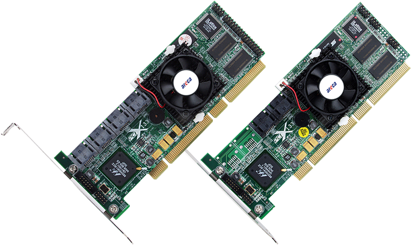

ARC-11X0 Series
(PCI-X to SATA ll RAID Adapters)
ARC-1120
Product Highlights
✵ Supports up to 4, or 8 SATA II drives on a single host adapter
✵ STAT-II 300MB/s speed at EACH SATA II drive ports
✵ Support RAID level 0, 1, (0+1), 3, 5, 5 (RAID 6 engine installed) and JBOD
✵ Areca ASIC to support highest speed RAID 6
✵ Redundant flash image for adapter availability
✵ Online Capacity expansion, RAID level/stripe size migration
✵ Hot-swap and Hot-spare function for data availability
✵ Support Greater than 2TB Volume set and battery backup
✵ Web browser-based RAID manager via HTTP PROXY SERVER for Windows, Linux & FreeBSD system
PCI-X to SATA ll RAID Adapters
The ARC-11X0 Serial ATA ll RAID host adapter is a high-performance PCI-X bus to SATA ll Disk Array host adapter. The controller can provide up to 4 or 8 SATA ll peripheral devices on a single host adapter. When properly configured, the SATA host adapter can provide non-stop service with a high degree of fault tolerance through the use of RAID technology and advanced array management features. Intel IOP331 processor has integrated the RAID 6 engine inside. It offers Areca the advantage of reduced engineering and development costs, by having the New RAID6 function build-in and integrated part saves on component costs and internal PCI bandwidth. Intel emphasis on architectural commonality in IOPs allows Areca developers to capitalize on their existing code base. The 4 and 8 port SATA RAID controllers are low-profile PCI cards, ideal for 1U and 2U rack-mount systems. These controllers utilize the same RAID kernel that has been field-proven in Areca existing external RAID controllers, allowing Areca to quickly bring stable and reliable RAID controllers to the market.
| ARC-11x0 Series 3Gb/s SATA RAID Adapters | ||
| ARC-1110 | ARC-1120 | |
| Intel IOP331 333MHz | ||
| Cache Memory | 256MB on-board DDR333 SDRAM with ECC protection | |
| Host Bus Interface | PCI-X 64bit/133MHz | |
| Ports | 4 x internal | 8 x internal |
| Drive Connectors | 2 x Dual-Layer SATA | 4 x Dual-Layer SATA |
| Data Transfer Rate | Up to 3Gb/s per port | |
| Drive Support | Up to 4 x SATA HDDs/SSD | Up to 8 x SATA HDDs/SSD |
| Physical Dimensions | Low Profile: 168(L) x 64(H) mm | |
| Power Dissipation | Typical: 10.97W | |
| Operating Temperature | 0 °C to 50 °C with 200 LFM airflow | |
| Operating Humidity | 10% to 85%, non-condensing | |
| BBM Support | ARC-6120BA-T113 | |
| RAID Levels | RAID level 0, 1, 10(1E), 3, 5, 6, Single Disk or JBOD | |
| RAID Features |
|
|